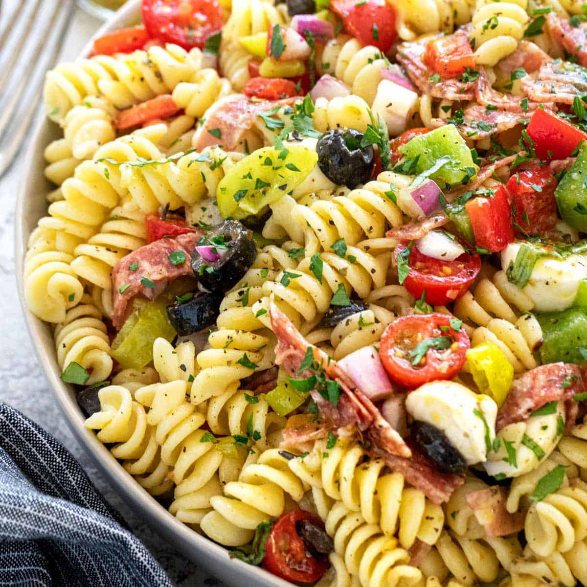

Italian Pasta Salad

Description
This easy Italian pasta salad makes a great side to any dinner!
A mixture of vegetables paired with mozzarella cheese and
Italian
dressing makes for a great combination of textures
and flavors.
Simply toss together the ingredients and
refrigerate!
Ingredients
- 4 quarts water
- 1 tablespoon salt
- 1 pound rotini pasta
- 6 ounces mozzarella cheese balls, cut in half
- 4 ounces sliced salami, cut into 1/4-inch thick pieces
- 1 cup baby tomatoes, cut in half
- 1/2 cup red bell pepper, 1/2-inch dice
- 1/2 cup green bell pepper, 1/2-inch dice
- 1/2 cup red onion, 1/4-inch dice
- 1/2 cup black olives, sliced
- 1/3 cup sliced pepperoncini
- 1 tablespoon chopped parsley
- 1 tablespoon sliced basil leaves
- 1 cup Italian dressing
Steps
- In a large pot bring water and 1 tablespoon of salt to a
boil. Cook pasta until slightly softer than al
dente, about
9 to 10 minutes.
- Drain pasta, rinse with cold water until cool, about
1 minute.
Thoroughly drain excess water and then add
noodles to a
large bowl.
- Top pasta with mozzarella cheese, salami, tomatoes,
red bell
pepper, green bell pepper, red onion, black
olives, pepperoncini,
parsley, and basil. Stir to combine.
- Drizzle 1 cup of the Italian dressing over the pasta and
gently
toss until combined. Add more as desired or serve
the extra
dressing on the side.